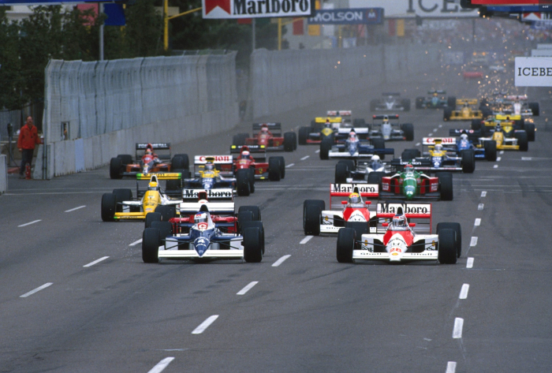

ALESI BRILHA E SENNA VENCE

Uma prova diferente: desde chuva no deserto a um grid estranho e uma Tyrrell liderando, tudo fugiu ao normal. Berger é “pole”, mas bate. Alesi lidera por 34 voltas e é superado por um Senna calculista. Ferraris decepcionam. Piquet renasce. Moreno e Gugelmin terminam, com problemas:
Por Francisco Santos
Todo o primeiro GP do ano nos traz novidades na forma de carros e pilotos novos. Nos meses de entre-safra, depois do último GP do ano anterior, público e jornalistas descansam de uma temporada de 16 GPs, enquanto as equipes preparam seus novos modelos para mais um campeonato. A curiosidade de ambos é satisfeita nos cada vez mais frequentes testes de inverno. Mas, competição de verdade, só no primeiro GP do ano. Este ano a prova de abertura foi em Phoenix, no meio do deserto do Arizona. Depois do terrível “inverno de descontentamento” dos tristes episódios entre FISA, McLaren e Ayrton Senna, foi maravilhoso regressar ao que de mais sério o esporte nos oferece – a competição. Além das muitas novidades, caras novas em carros e equipes diferentes, tivemos uma maravilhosa surpresa e a confirmação de uma triste realidade. A exibição de Jean Alesi foi estonteante, oferecendo dos mais belos momentos de competição leal a que se tem assistido nos últimos anos. Foi ele, sem dúvida, a figura principal deste GP. Por outro lado, o alheamento total do povo norte-americano por mais um GP citadino mostra de novo como a F1 é mal promovida nos EUA. Performances como as de Alesi e de Senna – vencendo a prova com uma nova sabedoria – mereciam ser apreciadas por um público numeroso.
Moreno brilha nas pré
Roberto Moreno levou o EuroBrun a passar as pré-qualificações pela segunda vez na história da marca, e fez o melhor tempo, na frente dos dois Lola/Lamborghini. O estreante Claudio Langes, seu companheiro, fez mais 5 segundos! Terão sido também os excelentes Pirelli que levaram Grouillard a colocar o Osella entre os dois Lola. Esta performance de Grouillard não será de espantar: nos testes de inverno, em Jerez, havia conseguido bater o tempo da “pole” de Ayrton no GP da Espanha anterior. Já nesta primeira sessão “a sério”, em 1990, se confirmava a tremenda evolução dos tempos: a melhor volta de Moreno – 1m32,292s – era melhor que a de Berger com Ferrari, um ano antes, e teria sido oitavo no grid de 1989! Gary Brabham estreou o Life. Fez apenas quatro voltas e meia até que a “caixa preta” falhou e, como esperado, nem chegou perto da pré-qualificação. A Coloni também estreava: o motor Subaru. Nem sequer conseguiu entrar na pista: à saída dos boxes, Gachot ficou com a alavanca do câmbio na mão…

Treinos oficiais
O que mais poderia ambicionar Gerhard Berger na sua estréia oficial na McLaren, ao lado do “Super Senna”, que vinha de seis “poles” consecutivas? Uma “pole” mostraria que não seria mero “escudeiro”. Se a ”pole” de Berger não pode ser surpresa (4 “poles” na Ferrari), o “grid” foi diferente do habitual: até perto do final do primeiro treino de qualificação os três melhores eram Martini, De Cesaris e Alesi, todos com pneus Pirelli. Apenas nos últimos minutos, Berger conseguiria bate-los, e, com apenas 0,067s de vantagem sobre Martini. Nenhum dos pilotos teria hipótese de melhorar os tempos no dia seguinte, já que para cúmulo – choveu no deserto do Arizona, e a pista ficou alagada! Por isso, e pela excelente performance dos pneus Pirelli na 6ª feira, tivemos um “grid” estranho, com 3 pneus italianos entre os 4 primeiros e 6 entre os 11 primeiros. De realçar a performance dos Tyrrell que rodavam pela primeira vez com Pirelli. Alesi foi o primeiro piloto a completar uma volta de Phoenix em menos de 89s, batendo por mais de 1s o tempo de Senna nos treinos livres em 89 (1m29,925s) e a sua “pole” (1m30,108s). Moreno chegou a ter o terceiro tempo, e Grouillard o segundo. Berger salvava a honra da GoodYear, e Senna, com o motor falhando, não conseguia melhorar. No sábado, com a pista molhada, de manhã, Nannini foi o mais rápido, e no treino oficial de tarde, no qual 15 pilotos nem se deram o trabalho de participar, Donnelly fez o melhor tempo, seguido de Moreno. Assim se chegou a um “grid” diferente, em que 4,38s separavam o “pole” do último (Capelli) comparado com os 3,7s de 1989, enquanto a diferença entre o “pole” e o segundo de 89 (1,409s) havia sido superior à diferença entre Berger e o nono deste ano (Boutsen)! Pela primeira vez em 25 GPs, Senna não estava na primeira fila!

Sonho ou realidade?
No “warm-up” tudo voltou à normalidade: Senna foi o mais rápido. Mas a colocação de Alesi em segundo e de Prost em quinto, a 1,7s, fazia antever uma corrida fora do habitual. Primeira surpresa na largada: Alesi galgava da quarta posição para tomar a liderança na primeira curva, com o Cosworth batendo o Honda de Berger em aceleração. Esta era a primeira largada do ano. Tem sido hábito assistirmos às acrobacias na primeira volta da temporada. Estávamos ainda recordados do toque entre Senna e Berger no final da reta de largada do Rio um ano antes. Mas já na largada começava o grande “sonho”, com Ayrton a ter uma atuação cheia de “cabeça”: “Arranquei bem e pensei poder chegar ao Alesi antes da primeira curva. Mas não encontrei espaço. Gerhard e de Cesaris lá já estavam. Tive de levantar o pé, para evitar problemas, o que foi frustrante.” No meio do “grid” Grouillard e Patrese tocaram-se, e logo em seguida Nannini e Foitek faziam o mesmo. De todos, só Grouillard não teve de ir aos boxes. Donnelly nem sequer largara: com o câmbio do Lotus encravado, teve de ser empurrado do “grid” para os boxes. No comando, Alesi afastava-se de Berger com facilidade. Pela primeira vez em oito anos um Tyrrell liderava uma prova! Era entusiasmante ver a descontração e o elegância com que o jovem Alesi ziguezagueava entre os guard rails, usando cada pedacinho das ruas, deixando as freadas para os derradeiros metros, quase sempre além dos esperados limites. Os Pirelli davam certa vantagem, mas aquela bravura, aquela entrega total e desprezo pelos limites só eram possíveis com muito talento e muita garra de lutador.

Alesi batia o recorde da pista logo à segunda passagem em mais de 1,1s (!) e o melhorava sucessivamente. A 4º volta fazia o seu melhor tempo na corrida e Berger já ficava a mais de 4s. De Cesaris fazia uma boa prova, em terceiro, na frente de Senna. Mas este não podia esperar mais e passou-o, embora mantendo um ritmo pensado para não aumentar demais a temperatura dos freios, nem danificar os pneus. Martini era quinto, na frente de Piquet. Boutsen e Prost que, além de ter largado mal, já tinha problemas de câmbio. Na frente, Alesi continuava a aumentar a vantagem sobre Berger, enquanto Senna se chegava ao seu colega, mas, sabiamente, não muito perto, já que na 9ª volta o austríaco comete um erro e bate na barreira de pneus da curva 6: “Foi culpa minha – freei com o pé mal colocado e toquei também no acelerador”, admitiu Berger, cujo McLaren os comissários tiraram da posição perigosa. Berger conseguiu por o motor a funcionar e foi aos boxes, regressando à pista em último, a 5 voltas dos primeiros. Um pouco atrasado pelo acidente de Berger, Senna ficava a quase 9s de Alesi, mas, sensatamente, não atacou desde logo, correndo o perigo de danificar os pneus com o carro ainda pesado de gasolina. Era o início de uma grande prova, com Alesi na frente a fazer maravilhas, e Senna, cauteloso e estudioso, atrás, esperando o melhor momento. Era o grande sonho: a confirmação de um novo talento e a nova cabeça de um grande campeão. Todos os carros estavam calçados com pneus duros – “C” da GoodYear e “88” da Pirelli. Em princípio ninguém precisava trocar pneus. Mas Ayrton esperava para ver o que acontecia com os Pirelli de Alesi. Quando o francês não diminuiu o ritmo, decidiu atacar: “Durante várias voltas andei como na qualificação”. Mas não iria ser fácil chegar em Alesi cujas trajetórias eram “suaves e precisas, sem um erro”.

Seria sonho ou realidade: um McLaren com dificuldade em discutir a liderança de um GP com um Tyrrell. Quem, nos últimos sete anos, ousaria imaginar esta situação absurda? Mas, à 30ª volta, Senna já estava quase colado a Alesi. Foi um sonho, quase uma miragem: ver Ayrton dar tudo por tudo para tentar passar o Tyrrell de Alesi, e reconhecer neste o talento para discutir essa liderança. Foi o grande show: por duas voltas, Ayrton tentou passar no final da reta de chegada, mas não arriscou disputar a freada. Na 34ª volta, saindo mais rápido da curva de entrada na reta, conseguiu chegar ao final desta com andamento suficiente para colocar o McLaren por dentro na aproximação da curva direita em 90º. Entretanto, Alesi manteve a sua posição do lado esquerdo, entrou por fora na primeira curva, saiu mais rápido e passou Ayrton na entrada para a curva esquerda seguinte. Quase não dava para acreditar. Era bom demais! Alesi estava de novo na frente. Na volta seguinte, Ayrton atacou no mesmo ponto, mas desta vez entrou na curva mais na frente. Mesmo assim, o francês ainda tentou a mesma manobra de recuperar o comando na saída da curva. Mas desta vez já não dava, e teve o bom-senso de não forçar. Até nisso Alesi subiu definitivamente na consideração de todo o mundo. Um jovem leão que dominou este GP, mas soube domar o seu ímpeto na hora certa. Não havia mais nada a fazer. Os Pirelli já tinham dado o seu melhor. Tinha sido um milagre aguentar os ataques de Ayrton. Agora restava manter o brilhante 2º lugar, a melhor classificação daTyrrell desde 1983. E não iria ser difícil, já que Boutsen, com o seu motor Renault falhando estava a mais de 35s. Piquet era quarto, apesar de ter sido o único dos seis primeiros a trocar pneus do Benetton que saía de frente, e era seguido de Modena e Mansell, cujo Ferrari continuava a fumar e cuja embreagem quebra na reta, provocando uma violenta rodada de 360º, lembrando à de Adelaide em 1986. Na frente, Senna administrava a vantagem sobre Alesi com grande sabedoria, não se deixando afetar pelo ruído estranho que a certa altura o motor fazia. Nakajima completava a euforia de Ken Tyrrell, chegando em sexto, enquanto Moreno fora forçado a parar duas vezes: primeiro para trocar a bateria e depois os pneus. Pelo menos terminou, ainda que em 13º, Paolo Barilla fez uma prova tão desconfortável no diminuto cockpit do Minardi para a sua estatura que teve de abandonar com o braço esquerdo adormecido. A corrida foi um desastre para a Lotus e para a Ligier. Warwick abandonava ao final de 5 voltas com o mesmo problema dos treinos: suspensão traseira quebrada. Alliot fora desclassificado e Larini teve o acelerador preso duas vezes, batendo da primeira e abandonando à 4º volta. Maurício Gugelmin, apesar dos enormes problemas de estabilidade e vibração (“tive dores terríveis nas costas e, principalmente, no cocxis, e não sentia as pernas”), foi até o final. Martini foi vítima de um erro da Minardi ao retirar grande parte do apoio aerodinâmico que havia usado a bom termo nos treinos.